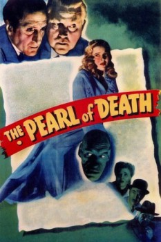

Country:United States, 69 minutes
Spoken languages:English
Genres:Thriller, Mystery, Crime
Director(s):Roy William Neill
Writer(s):Bertram Millhauser
Video Codec:Unknown
Number: 715

Certification:
Storyline:
The famous Borgia Pearl, a valuable gem with a history of bringing murder and misfortune to its owner since the days of the Borgias, is brought to London, thanks in part to Sherlock Holmes. But before long the jewel is stolen, due to an error on Holmes' part, and shortly thereafter, a series of horrible murders begin, the murderer leaving his victims with their spines snapped and surrounded by a mass of smashed china.
Cast:
Basil Rathbone (as Sherlock Holmes), Nigel Bruce (as Dr. John Watson), Dennis Hoey (as Inspector Lestrade), Evelyn Ankers (as Naomi Drake), Miles Mander (as Giles Conover)
Medium: Media file,
Location: D:\Sherlock Holmes\Basil Rathbone\Sherlock Holmes Pearl of Death.mp4
Loaned: No
Aspect ratio: Unknown